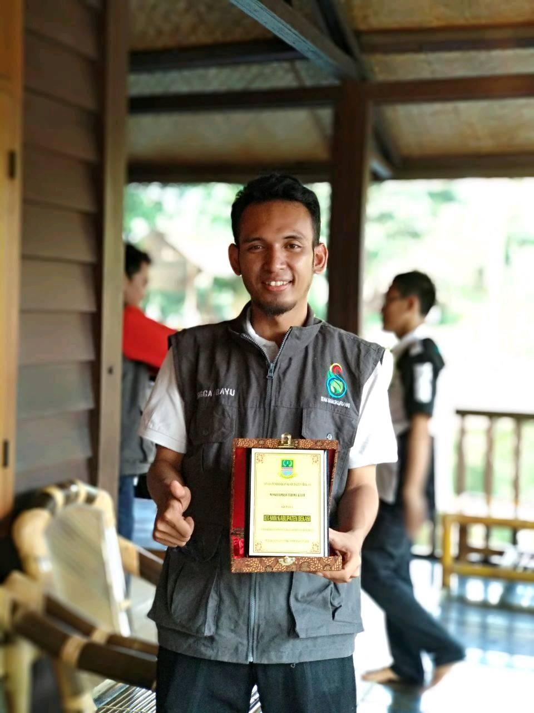

Profile Saya

Rangga Bayu Utama lahir di Bekasi 10 Agustus 1988. Lulus SMA pada tahun 2006 di SMAN 1 Cikarang Utara Jurusan Ilmu Pengetahuan Sosial dan saat ini sedang mengikuti program Studi Strata 1 (S1) Ilmu Komputer di STMIK Almuslim Tambun.
Setelah lulus SMA tahun 2006-2013 bekerja di berbagai perusahaan, baik yang bergerak di bidang jasa, retail maupun manufaktur di daerah Kabupaten Bekasi.
Kemudian di tahun 2014-2017 dengan bermodal hasil pendapatan selama bekerja, akhirnya dapat membuka usaha WarNet (Warung Internet) di daerah Kecamatan Cibarusah, Bekasi dengan nama Tawadhu.net dan Bios.net.
Seiring perkembangan teknologi yang semakin maju dengan adanya smartphone, maka di akhir tahun 2017 animo terhadap WarNet sudah berkurang, dan akhirnya kedua WarNet yang saya kelola harus tutup.
Di tahun yang sama akhirnya saya memutuskan untuk menjadi Tenaga Pendidik di sebuah sekolah swasta di Kecamatan Cibarusah sebagai Guru Produktif TKJ yang kemudian membawa karir saya bergerak maju. Salah satu kemajuannya adalah saya tergabung dalam Tim ICT Kabupaten Bekasi dibawah Dinas Pendidikan & Kebudayaan Kabupaten Bekasi, yang tugasnya adalah memantau, mengawasi dan menjamin pelaksanaan Ujian Nasional Berbasis Komputer (UNBK) Tingkat SMP/MTS/SMA/SMK di Kabupaten Bekasi berjalan lancar & terkendali. Saya juga pernah menjadi panitia Lomba Kompetensi Siswa Sekolah Menengah Kejuruan (SMK) yang pada waktu itu dilaksanakan di Universitas Pelita Bangsa dengan mata perlombaan IT Network System Administrator & Web Technology. Dan saya adalah salah satu tim pembuat soalnya.
Saya mempunyai hobby bermusik, berolahraga dan saya juga senang membuat konten di platform YouTube berkaitan dengan hobby saya.